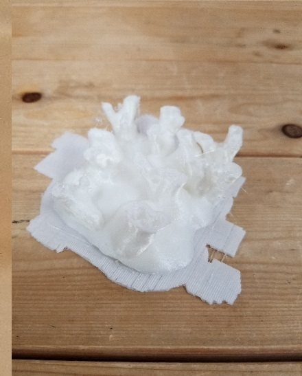
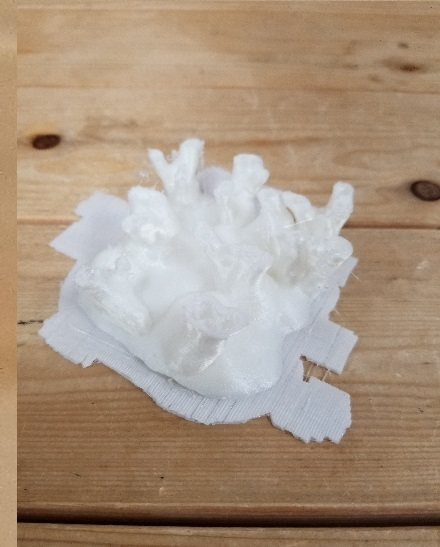
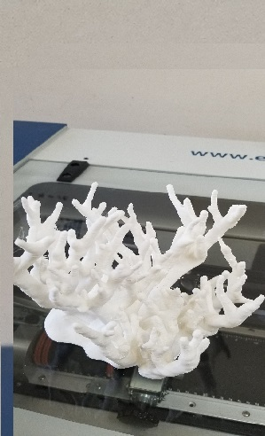
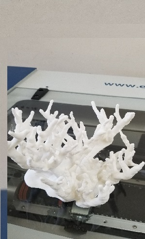
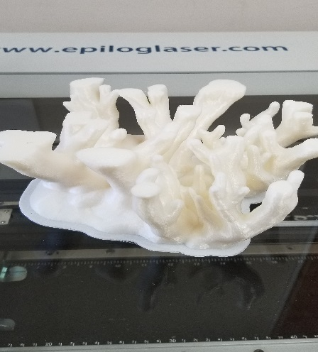
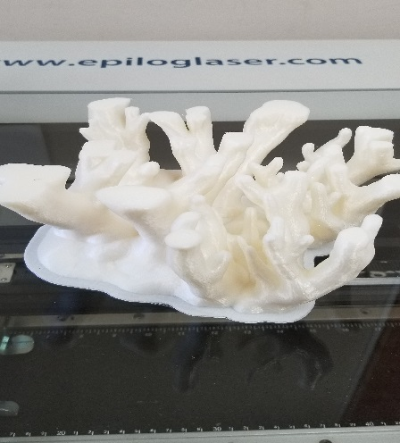

江の島展示会～海×デジタルファブリケーション～
■展示物
白化した珊瑚

■背景
海に関する問題を取り上げるにあたり、様々な環境問題による海の汚染について調べた。
その中で、日本人にはあまり馴染みがなく、ニュースでもあまり取り上げられていない問題を今回の展示会で展示したいと思い、白化した珊瑚を3Dプリンターでつくろうと考えた。
珊瑚が白化すると、珊瑚に隠れて生活していた小さい魚の住処が無くなり、生きていくことができなくなる。
そうするとその小さな魚を食べていた魚は食べ物が無くなってしまい、さらに大きな魚も食べる魚がなくなってしまう。それはやがて人間が食べる魚もいなくなってしまうという負の連鎖に陥るのだ。そして今まさに世界各地で地球温暖化や埋め立て、ごみなどによる海の汚染の影響で珊瑚が白化している。米国海洋大気庁（NOAA）が発表したデータによると、記録的な海水温の上昇により、いま世界的のサンゴの死滅による白化が過去最悪のペースで進行中だという。ところが日本では珊瑚に関するニュースがテレビで流れることは極めて少ない。実際、私は家のテレビはニュース番組しか見ないが珊瑚についてほとんど話題になっていない。したがって私は、本当はとても身近な問題を展示会に来てくださった方々に知ってもらい、興味、関心をもっていただきたい。
■製作
 試作1号 珊瑚
試作1号 珊瑚
 試作2号 珊瑚
試作2号 珊瑚
 試作3号 珊瑚

試作4号 珊瑚
試作3号 珊瑚

試作4号 珊瑚
 試作5号 珊瑚

試作6号 珊瑚
試作5号 珊瑚

試作6号 珊瑚
 試作7号 珊瑚

試作8号 珊瑚
試作7号 珊瑚

試作8号 珊瑚
 試作9号 珊瑚
試作9号 珊瑚
 試作10号 珊瑚
本作 珊瑚
試作10号 珊瑚
本作 珊瑚
 本作 珊瑚2
本作 珊瑚2
■搬入
車に展示する荷物などを運び入れ、展示会場に搬入しました。
そして、実際にどのような配置で展示するかを決めるため、それぞれの作品を実際に配置しました。

■展示会

天気が悪く客足もわるいスタートとなりました。
そのため初日の午前は22人ほどしか来場者はいませんでした。しかし午後には56人の方々に見ていただき、計78人もの人々に作品を見ていただきました。
その後の土曜日には187人、日曜日には238人もの方々が見て回りました。
江の島に観光に来た方や地元に住んでいる方、海外から日本に遊びに来た方など、多くの方々に自分たちの作った作品を見ていただき合計784人の方々に見ていただくことができました。
■まとめ
展示会では多くの方々に見ていただき、珊瑚についての質問も多かったことから、珊瑚の白化問題について多くの方に知ってもらい、興味、関心をもっていただくことができた。これは、日本の人口のほんの一握りに過ぎないが、この問題が広がっていくきっかけをつくることができたといえる。よって最初に掲げた展示のテーマに沿い、展示会を終えることができた。
この展示会を通して、一声かけることが非常に大事なことだと学んだ。
私は展示を見る側になったとき、話しかけられるのが嫌なタイプである。今回の展示でも、言葉が伝わらない人、話しかけられるのが苦手な人もいた。しかし、声をかけなければ分からないことが確かにあった。その人は実はとても興味をもっていたり、作品を他の形で使えないか模索している人など、その人が何をしている人なのか、何に興味をもち、展示を見に来たのかというのは、話しかけなければ絶対にわからないことだ。それが段々見えてくるといった場面が数多くあった。私は、自分の価値観で、見に来た人には話しかけないほうがいいと、決めつけてしまっていた。だから今回の展示会は、テーマをもち、普通に展示をしただけでなく、そういった大事なことを写真家の近藤さんや多くの方々から学ぶことができた。
最後に、展示や準備でお世話になりました先生をはじめとするゼミのみなさんに感謝です。